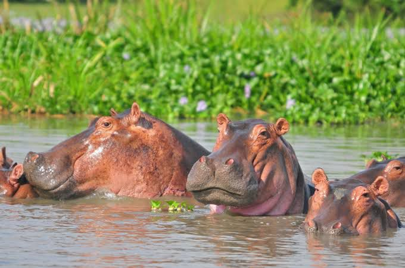

Preserving Burundi's Environment: A National Call to Action
Laury Iteka
May 15, 2025
As environmental concerns grow worldwide, Burundi is turning its focus toward sustainable practices to protect its rich biodiversity and fragile ecosystems. With the country's growing population and increasing pressure on natural resources, experts and government officials are calling for immediate and collective action to preserve the environment for future generations.
Forests Under Threat
Burundi's once lush forests have been significantly reduced over the years due to deforestation caused by agriculture, charcoal production, and population expansion. According to the Ministry of Environment, Burundi loses an estimated 1.2% of its forest cover annually.
"Forests are the lungs of our country," said Jeanne Irakoze, an environmental scientist with Green Burundi Initiative. "We must plant more trees and adopt alternative energy sources to reduce dependency on firewood and charcoal."
Government programs like "Ewe Burundi Urambaye", launched in recent years, aim to plant millions of trees across the nation. However, environmentalists stress that more education and community involvement are essential for lasting impact.
Protecting Burundi's Waters and Wildlife
Lake Tanganyika, one of the world's oldest and deepest freshwater lakes, is facing increasing pollution and overfishing. Conservationists warn that without proper regulation, fish stocks and water quality may continue to decline.
"We need to enforce fishing regulations and reduce the use of harmful chemicals in agriculture," said Dr. Aimable Ndayishimiye, a marine biologist at the University of Burundi. "Community-led conservation is key."
The Rusizi National Park and Kibira Forest are also home to endangered species such as chimpanzees and rare birds. Illegal hunting and habitat destruction remain pressing challenges.
Waste Management and Urban Pollution
With urban centers like Bujumbura expanding rapidly, waste management is becoming a critical concern. Piles of uncollected garbage and plastic waste clog rivers and roadsides, contributing to health and sanitation issues.
Municipal leaders are calling for stronger waste collection systems, public awareness campaigns, and laws banning single-use plastics.
"Clean cities start with responsible citizens," said Mayor Léonidas Hatungimana. "We must all be part of the solution, from households to industries."
A Role for Everyone
Environmental preservation in Burundi requires collective effort—from government and NGOs to local communities and schools. Experts emphasize the importance of integrating environmental education into the national curriculum, encouraging youth participation in conservation projects, and promoting eco-friendly practices like composting and rainwater harvesting.
In rural areas, organizations are promoting sustainable farming techniques such as agroforestry and crop rotation to prevent soil erosion and improve food security.
Looking Ahead
Burundi's government reaffirmed its commitment to the Paris Agreement and the African Union's Agenda 2063 by pledging to increase forest cover, reduce greenhouse gas emissions, and invest in renewable energy.
As Burundi moves forward, the message is clear: preserving the environment is not just a responsibility—it is a necessity.
"Tugire igihugu kibungabunga ibidukikije" Let's build a nation that protects its environment.